Librarian Agents：让模型先整理知识工作区，再回答未来的问题
Anikait Singh、Teresa Zhang、Yoonho Lee、Roshen Sanjay Nair、Aviral Kumar、Chelsea Finn；第一作者机构为斯坦福大学，合作机构为卡内基梅隆大学。论文发表于 arXiv，首次提交时间为 2026 年 10 月 15 日 17:35 UTC，即北京时间 10 月 16 日 01:35；本文按 2026 年 10 月 19 日调研记录阅读。
论文入口：Librarian Agents。作者代码仓库与项目页本轮均已核验可访问；可访问不等于训练产物和完整复现实验已被逐项复现。英文原题为 Librarian Agents: Training LLMs to Curate Long-Context Workspaces that Anticipate Future Queries。
目录：1. 背景和问题 · 2. 方法 · 3. 实验结果 · 4. 总结
1. 背景和问题
语言模型代理已经善于浏览现成的文件系统来完成眼前任务，却很少被训练成在未来问题出现之前，主动把原始语料整理为可以反复使用的工作区；结果是每来一个问题，系统都要重新发现分散在不同文档里的关联。
这段问题陈述来自论文摘要和引言的压缩译述。作者关心的是企业知识库、代码仓库、长期聊天记录等超过上下文窗口的材料：一个答案的证据常常不在某一篇文档，而分散在设计说明、发布记录、故障讨论和用户反馈里。即使检索器能找回包含关键词的段落，回答模型仍需在有限的上下文中拼接时间线、消除实体歧义、识别不同版本的关系。单次请求的搜索链越长，下一次相近请求重新做一遍的浪费越明显。因此，问题的核心既包含证据召回，也包含知识之间的组织方式以及组织计算发生的时间。
传统检索增强生成主要在问题到来后行动。向量检索把问题映射到相近文本，重排器再选出更可能相关的材料，代理式检索则允许多次搜索、查看结果并重新提问。这些策略可以改善一次回答，却没有自动把已经发现的跨文档关系变成后续问题都能使用的稳定资产。同一批产品资料中，询问“某功能如何实现”和询问“某版本为什么改变行为”可能共享大量证据，但是按请求重启的搜索流程通常难以直接复用第一次推理发现的结构。这里所谓“提前整理”，就是把这些可能复用的中间结果保存下来。
预先构建知识图谱和层次摘要已有类似动机，但它们通常先规定表示形式，例如抽取实体、关系，再生成社区摘要。固定结构有可解释性和可控性，却也会产生表达偏置：发布日期、组件依赖、产品行为变化和争议证据不一定适合相同的关系模板。论文因此提出更灵活的目标，让模型自行决定应该创建哪些合成文件、哪些文件需要合并成高层入口，以及哪些中间产物重复无用。文件系统只是可操作的外部表示，真正希望学到的是“什么组织方式有助于另一个模型回答各种未来问题”。
这个设定与看见当前问题后制作一份答案草稿有本质的时间差。构造者只能看到语料和已经形成的工作区，不能看到待测问题。它需要面对的是一个未来查询分布，而不是单个已知问题的关键词。训练阶段虽然会通过下游任务成败计算奖励，但训练查询也不作为构造者的输入；评估查询既不能参与构造，也不能用来挑选报告的检查点。否则，所谓通用工作区很容易退化成针对评测题的提示缓存，预计算收益和泛化结论都会失去意义。
作者用企业资料举例说明三项要求。首先是覆盖与导航：同一批材料可以同时形成版本时间线、组件索引和客户行为总结，让不同问题从不同入口开始，减少盲目遍历。其次是忠实回退：摘要不可避免会遗漏细节，因此必须保留原始文档与来源路径，允许回答者回查。最后是复用摊销：构造工作区需要额外的模型计算，只有后续足够多的问题共享同一份语料，它才可能在有效答案成本上获益。三个要求分别对应“能找到”“能核对”和“值得提前做”，缺少任何一个都不能仅凭目录看起来整齐证明系统有用。
需要澄清的是，合成文件不是原文的替代品。原始材料是证据层，合成文件是经过组织和压缩的访问层。一个高层索引可能有助于定位某个学校或组件，但不能因为索引中出现某个名字，就跳过对原始证据的核实。文件数量、目录深度和合并次数也不是任务效果本身：过少可能覆盖不足，过多可能让导航变贵，过度概括又可能损失关键事实。论文选择用固定回答者的正确率反过来评价构造行为，是把这种难以手工定义的“可用性”变成可训练信号。
从系统成本看，提前计算也存在一个容易被忽略的条件：工作区丰富之后，回答者可能读取更多文件，而不是更少。提高准确率与减少原始请求开销并不总是同方向。建设成本、每问导航成本、正确率和复用问题数必须共同报告。论文后面的成本实验恰好表明，RL 工作区每次回答消耗的记录 token 更高，但在某些复用负载下，每个期望正确答案对应的成本更低。若只截取“节省百分之多少”一句话，就会把有效产出的改进误写成所有请求都变便宜。
还要分清语料级复用与模型参数记忆。构造者在训练中学到如何编辑材料，并不需要把每份企业文件的事实永久记进模型权重；新的语料会在外部形成新的工作区。这样便于检查和替换某一份材料，也使跨领域迁移可以在不再训练模型的情况下进行。另一方面，工作区一旦写出错误概括，错误会被后续多次查询反复接触，影响可能比单次检索噪声更持久。因此，组织质量应同时包括可寻址性和事实保真，单看一个正确答案无法区分“整理得准确”与“碰巧保留了这一题需要的片段”。训练奖励和评测题分布越窄，这种区别越需要额外验证。
本文的研究价值在于将外部记忆的组织策略也纳入学习，而不只是学习如何搜索已经存在的记忆。它适合思考稳定语料、多次查询和复杂证据链的组合场景；对高速变化的商品库、实时推荐特征和单次临时文件，则还需要额外检查更新成本与有效期。推荐系统可以借鉴这种长期材料整理思路，用于实验记录、商品知识或策略文档的研究助手，但本论文没有进行线上推荐实验，也没有证明排序指标或商业收益改善。阅读时应把这些可能迁移的方向，与已经得到离线问答证据的能力分开。
2. 方法
2.1 查询前构造可复用文件系统
原文先定义原始语料、工作区和编辑操作，再解释工作区需要具备的性质。语料是一组原始文档，初始文件系统包含这些文档；随着构造推进，系统增加合成文件、目录关系和来源链接。构造者输出的是供后续回答者浏览的工作区，不是针对某道题的最终答案。合成文件可以汇总多个来源，也可以引用已有合成文件，高层入口则概括一组更细的文件。输入是当前语料与现有文件结构，输出是一次受约束编辑后的新结构。整个过程在未来评估问题进入系统之前完成，因此同一份最终结构能够被重复使用。
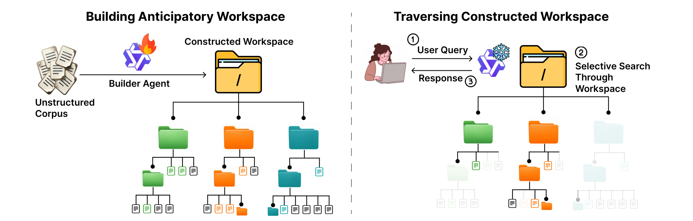
图 1 左侧是可训练的构造者，右侧是使用已经建好工作区的冻结回答者。火焰与雪花所表达的是两者的训练边界：优化组织策略时回答模型保持固定，准确率变化才能更多归因于留下的材料。左边同一批原始文档被组织到多层结构中，右边面对一个具体问题时，只沿部分路径读取需要的内容；浅色节点表示没有必要每次展开全部分支。这里的选择性访问不是一套固定关键词检索，而是利用回答模型已经具备的目录浏览能力。图中的树形结构也不意味着只能形成严格的一源一父关系，来源链接允许不同合成文件指向相同底层材料。对实现而言，至少需要保存节点类型、父子关系、文件内容和来源路径，否则高层摘要一旦漏掉细节，回答者便只能猜测。图中先建设后查询的箭头顺序尤其重要：用户查询属于右侧阶段，不能反向泄露给左侧建设过程。这种隔离使实验检验的是通用材料整理，而不是一次性答案预写，也使建设成本的复用有清晰计量边界。另一个实现含义是根层入口会预先进入回答者上下文，因此顶层摘要既承担路由职责，也占用固定上下文预算。把每个细节都提升为根层文件，可能破坏选择性展开的优势；压成一个过短入口又可能让深层材料难以发现。可学习构造的价值正在于让这些选择接受实际问答反馈，而不是预先规定所有主题都使用同样的目录宽度。读者也应留意来源路径的可读性：如果摘要能告诉模型哪些原文可能有关，回退才有机会从全面搜索变成局部核对。
2.2 将工作区编辑写成决策过程
作者把建设形式化为有限时域决策过程。状态是当前工作区，动作由构造策略根据这个状态生成，执行工具后形成下一个状态。四种离散动作分别是创建、合并、删除与停止。创建负责把一部分原文或合成文件整合成带来源的新文件；合并把相关合成文件抽象为更高层的目录式材料；删除只移除活跃合成层中冗余或无用的文件，不能删除原文；停止返回当前最终工作区。这比任意执行文件命令更容易限制搜索空间和轨迹长度，也把安全保留证据落实为动作约束。下面先列出状态转移和回答成功率，再说明奖励如何衡量编辑价值。
符号解释：工作区为 $\mathcal F_t$，编辑为 $\mathcal A_t$，构造策略为 $\pi_{\mathrm{build}}$；未来问题 $q$ 来自分布 $\mathcal Q$，回答策略为 $\pi_{\mathrm{ans}}$，生成答案为 $\tilde y$，标准答案为 $y^*(q)$。正确性函数取零或一，$S$ 因而表示给定工作区支持未来问题时的期望成功率。这个期望通过训练查询的小批量探测近似，不能理解成构造者能看到未来题目的答案。
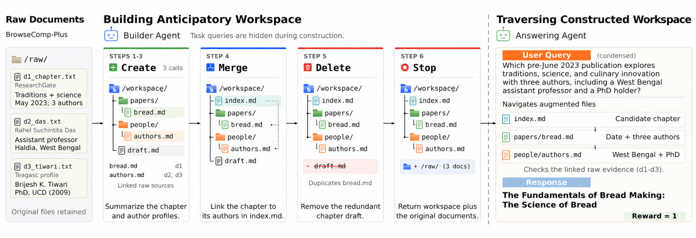
图 2 把四个动作落到一个跨文档识别出版物的例子中。原始材料分别提供章节、作者身份和履历，构造者先创建论文与人物文件，再合并成一个能连接章节与作者的索引，随后删除重复草稿，最终停止并保留原始来源。回答者收到问题后，从索引定位候选章节，再沿人物文件核对作者条件，并检查底层材料。左侧展示的摘要并不需要在建设时知道右侧具体问题，因此更准确的理解是构造了可支持多种核查的问题空间，而不是猜中了某道题。删除步骤移除的是重复的合成草稿，这正是“保持原始证据不可删除”与“精简可见记忆”能够同时实现的原因。每个文件的价值也取决于上下文：作者文件单独存在可能不足以回答，合并索引把章节与作者联系起来才变得有用；因此奖励不能只根据生成了多少字或者目录是否平衡来确定。图里较浅的路径说明组织结构可以缩短发现线索的过程，但是否真正省导航成本，需要后面的结构干预实验验证，不能由这张机制示意图直接推出。这种动作粒度还有信用分配上的含义：创建一个文件同时包含选来源、生成概括和选择放置位置，奖励观察到的是整项操作组合后的效果；合并也会改变入口层暴露的信息。因而本文并未分别证明命名、摘要质量与拓扑哪个最重要。四个动作减少了学习复杂度，却限制了可表达的维修方式，例如源文变化后的局部更新仍需新的设计。原图的步骤是说明机制的案例，而不是要求任何语料都严格执行三次创建、一次合并、一次删除。
一般形式的效用同时考虑回答成功与导航开销，稀疏目标再减去整个构造轨迹的成本；密集奖励则使用相邻状态效用的变化。原文的四个核心关系如下，保留它们有助于区分“提出的通用目标”与“主实验实际优化的目标”。
符号解释：$C_{\mathrm{tok}}$ 和 $C_{\mathrm{read}}$ 是期望归一化的合成记忆 token 与文件读取成本；$\lambda_{\mathrm{tok}}$、$\lambda_{\mathrm{read}}$ 控制导航惩罚，$\alpha$ 控制构造成本，$H$ 是最大编辑时域，$\gamma$ 是折扣因子。原文规定导航成本先乘各次回答的正确性再平均，因此错误回答不会因少读材料而获得正效用。在无折扣条件下，中间效用项相消，初始状态效用又与当前策略无关，于是密集和终局目标有对应关系。主实验把两个导航系数与构造成本系数都设为零，优化的是回答能力和终局正确性；目录更丰富、路径更合理都是分析结果，不是额外结构奖励直接推动的目标。
2.3 周期探测与冻结回答者的强化学习
每做一次编辑都运行回答评测会很贵，实际训练每八个构造回合探测一次，最多三十二回合，用相邻探测的回答能力变化加终局正确性提供信号。构造策略用 GRPO 更新；原文讨论可进一步交替训练构造者和回答者的合作版本，但主实验固定回答者、评估者以及执行内容生成的模型。冻结边界使学习问题更干净：观察到的提升反映同一个回答模型获得了更有用的外部工作区。训练时回答者看见问题，构造者不看见问题，二者通过奖励而非输入共享任务信息。
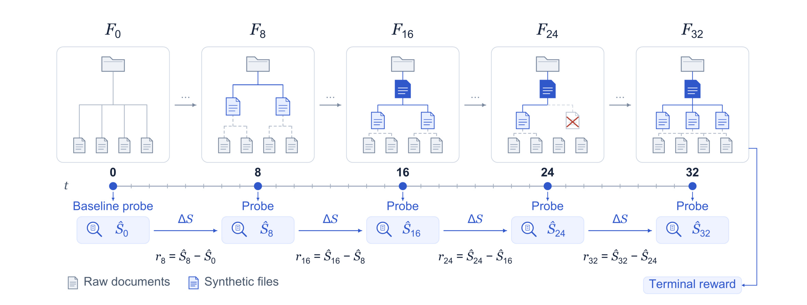
图 3 从初始语料开始，分别在第八、十六、二十四和三十二回合展示工作区变化。蓝色文件逐步增加，高层入口形成，个别文件被删除；下方的回答能力估计则用于给相邻阶段分配变化奖励。这比只在最后一次判断整条轨迹成功与否更有机会识别哪些编辑阶段有帮助，同时又避免每个微小动作都调用回答评测。图里的相邻差分是探测级信号的说明，不意味着能准确识别每一个文件对所有未来问题的因果贡献：一次探测仍然受查询采样和模型生成方差影响。终局奖励确保最终留下的结构仍与真实回答质量联系起来，而不是只追逐中间探测分数。论文把导航、文件规模和合并次数作为诊断指标报告，正是为了防止读者把图中变大的树误认为训练目标本身。复现时需要保持探测问题的隐藏边界，记录失败的建设和失败的回答；如果只统计成功完成建设的轨迹，就会把停止策略和工具失败的代价从分母中抹掉，也会改变奖励真正优化的对象。探测间隔也引入一个具体权衡：间隔短，估计更频繁但训练昂贵；间隔长，多个互相抵消的编辑被放在同一个分数变化里，较难定位错误。原文选择八回合作为实际配置，并没有提供所有间隔上的最优性证明。主实验建设最长三十二回合，使训练者能以有限次探测控制额外推理量，但泛化到更大语料时，所需回合数和可承担的探测预算可能共同变化。这也是为什么方法形式化与实际训练上限必须同时记录。
具体配置是 Qwen3.5-4B 构造者、LoRA 秩三十二、学习率 $4\times10^{-5}$、批量八、每组四条轨迹，单次构造生成最多一千零二十四 token，总轨迹上限六万 token。创建和合并调用固定的 Qwen3.5-35B-A3B 内容执行器，长历史由固定 Gemini 3.1 Flash Lite 压缩。因此“小模型学会整理”并不等价于整个系统只使用四十亿参数模型。训练完成后，部署阶段只需要在给定语料上运行构造策略，保存终局工作区，再让冻结回答者对各个新问题逐一导航；无需每次查询重复进行策略更新或重新建设，但语料变化时如何增量维护并未由这些实验解决。
3. 实验结果
3.1 BrowseComp-Plus 与匹配基线
主任务来自 BrowseComp-Plus，六百八十个语料级任务用于训练，五十个此前未见的语料级任务用于评估。每个任务包含一组用于深度研究问题的材料，文档组成保留证据、标准相关材料和负例的原有混合方式。建设时只给构造者文档，未来问题隐藏；完成工作区后，同语料问题共享这一份结果。比较包括向量检索、重排、晚交互检索、混合检索、代理式检索、图式预计算、自动压缩，以及不做 RL 微调的构造者。准确率把建设失败和生成失败留在分母内，因此不是仅在“成功建立记忆”的子集中统计回答成绩。
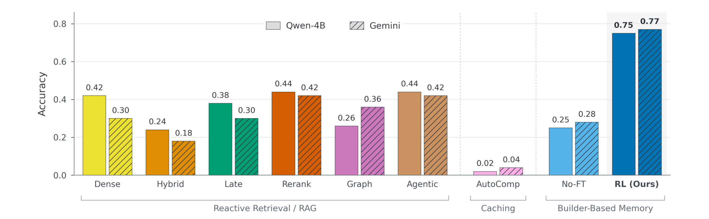
图 4 同时报告 Qwen3.5-4B 和 Gemini 3.1 Flash Lite 两种回答模型，两个颜色纹理对应回答者而非构造策略的不同版本。使用 Qwen 回答时，Librarian 准确率为零点七五，向量检索零点四二、重排零点四四；使用 Gemini 回答时，Librarian 为零点七七，向量检索零点三零、重排零点四二。对应最强对照的提升约为三十一和三十五个百分点，论文摘要概括的平均三十三个百分点应放在这个设置里理解。未经 RL 的构造策略只有约零点二五和零点二八，说明增加一个会调用工具的基础模型并不足以自动获得高质量可复用记忆。图中代理式检索也没有达到 RL 工作区的准确率，但这不意味着所有更强预算的检索代理都被排除：这里成立的是作者给定实现、语料、回答模型和生成预算下的比较。更可靠的阅读顺序是先确认相同回答者，再看预处理策略带来的差别，避免把零点七五和零点七七拼成模型升级幅度。
3.2 建造成本与多查询摊销
一次性成本不能从后续查询账单里消失。表 1 把预计算类方法的准确率与建设 token 放在一起，RL 构造大约需要十七点九万 token，明显高于图式方法；但自动压缩甚至更贵且效果较差。基础构造者与 RL 构造者接受相同的建设限制，实际消耗仍然不同，所以“预算相同”不能替代“真实成本相同”。这组结果支持的是学习后愿意投入更多有效组织，而不是只用更少计算完成同一件事。
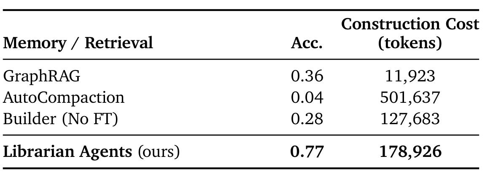
表 1 中 GraphRAG 的准确率为零点三六，建设消耗一万一千九百二十三 token；自动压缩准确率零点零四，消耗五十万一千六百三十七 token；未经微调构造者是零点二八与十二万七千六百八十三 token；RL 是零点七七与十七万八千九百二十六 token。最便宜的方法和最准确的方法并非同一个，这解释了为什么后续需要显式加入语料复用次数。原文这里的准确率对应其报告设置，不应直接替换另一回答者那列，也不能把建设 token 当作端到端延迟或货币成本。模型价格、并发、缓存和工具执行都可能改变实际账单，论文这张表尚未提供这些生产系统量。
为检查复用，作者为五十组材料冻结生成四百四十三个合成问题，每组七到十题，使用 Gemini 3.1 Flash Lite 参考 DeepDive 风格示例产生扩展问题。原有工作区不因这些新题重新建设。基础构造者准确率约零点二四，RL 约零点六四，但后者回答阶段读取显著更多的合成文件。它们是同语料多查询的扩展评测，与原先每语料一个主问题的结果不是相同测试集合。
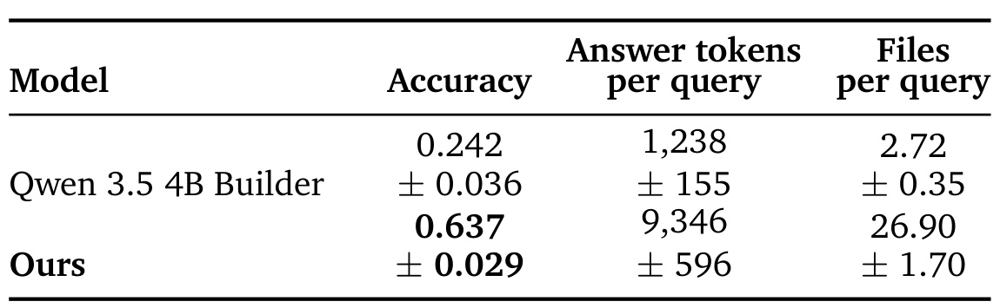
表 2 给出更精确的数值：基础构造者准确率零点二四二，RL 为零点六三七；每问回答相关 token 从一千二百三十八增到九千三百四十六，平均读取文件从二点七二增到二十六点九零。误差范围也随表保留，因此不能把每个语料都获得相同比例提升作为结论。这张表最有用之处在于揭示了质量与开销的联动：学到的工作区可供访问的材料更多，回答者实际也花更多计算寻找证据。若业务只允许固定的极低 token 上限，论文的准确率收益不一定能原样复现；复现应同时画质量与预算曲线，而不能只固定建设最大回合数后便认定公平成本已经完全匹配。
作者在附录用记录的日志估计复用成本。记方法的单语料建设成本为 $B_m$，每问回答阶段开销为 $A_m$，同语料复用 $q$ 次，则记录的平均每问 token 为：
这里 $p_m$ 是把失败留在分母中的准确率，第二项是每个期望正确答案的成本。它是通过群体准确率归一化得到的产出效率指标，不意味着对同一道题持续重试就一定产生一个正确答案，也不等于人工核验成本。原文给出的二十次复用约每问一万八千 token，是把建设成本均摊后的投影；不是又完成了一轮独立的二十问在线流量实验。
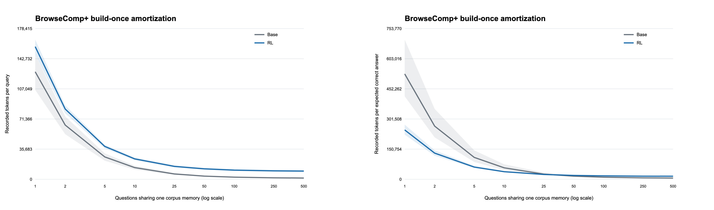
图 6 左侧显示原始每问记录 token，右侧显示除以准确率后的成本，两幅图的纵轴含义不同。RL 在左图始终比基础构造者更贵，因为丰富工作区带来更高的单问导航开销；在右图，它的高准确率能够抵消其中一部分成本。每语料十问时，RL 与基础构造者的归一化成本比为零点六六二，成对语料自助法百分之九十五区间为零点五零四至零点八三六，即每个期望正确答案少用百分之三十三点八的记录 token。附录报告的点交叉约在三十一问，区间为十八至五十四问，曲线远端的相对关系也会改变。因此这里既不能宣称“越多复用越占优”，也不能把十问时的节省拿去修饰左图原始请求。更稳妥的工程判断是：在目标语料真实负载上估计建设、读取、正确率三项，再确定哪一段复用区间有优势，而不是只追求摊薄建设成本。尤其在复用负载很大时，建设成本趋近于可忽略，最终比较更多由回答阶段开销与准确率之比决定，不能只凭最初的建设成本差推测长期优势。
3.3 BRIGHT 迁移与跨域差异
迁移实验把只在 BrowseComp 训练的构造者直接用于 BRIGHT 派生问答，不做领域适配。主比较覆盖 AOPS、Biology、Stack Overflow 三个领域，每域五十题，共一百五十题，每域只建立一个可供所有题共享的工作区。检索任务转换为固定参考答案的生成任务；相同比较中，各方法保持语料、回答模型、响应次数、生成预算和评分一致。每题生成四个独立回答，以平均单次正确率估计 pass@1，再从四次采样估计无偏 pass@3。这里的 pass@3 并不是部署时额外学会自行挑选正确答案。
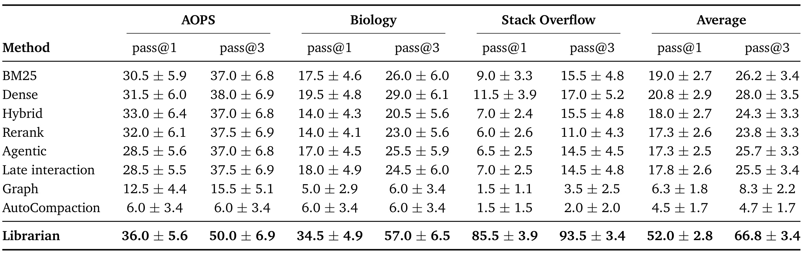
表 3 的宏平均 pass@1 为百分之五十二点零，pass@3 为百分之六十六点八。提升非常不均匀：AOPS 单次为百分之三十六，Biology 为百分之三十四点五，Stack Overflow 达到百分之八十五点五；对应三次覆盖分别是百分之五十、五十七与九十三点五。向量检索的宏平均单次是百分之二十点八，因此摘要所说约三十一点的平均改善有明确分母，但它只对应这三个主域的平均，不能写成完整 BRIGHT 全域统一提升。数学域相对最强检索基线的差距只有几个百分点，且存在相当误差，说明整理能力更容易帮助某些材料分布；大量跨文件工程知识可整理成可寻址事实，并不代表证明型数学问题也会同等受益。单一宏平均会掩盖这种任务形态差异。
附录另有九个领域各二十题的额外迁移，比较对象主要是基础构造者，并非表 3 中整套匹配检索基线。它可以提供更广方向上的线索，不能与主表直接混合后声称所有领域都已经充分验证。文件统计也需分清“建设了多少”和“回答读了多少”：三个主域平均活跃合成文件从四点八增到五十三点四，合并产物从零点六增到八点零；回答者平均读取合成文件则从三点三增到三十二点九。二者支持 RL 明显改变组织行为，但并不能单独证明最优文件规模或给出低延迟保证。
3.4 结构干预与原始证据回退
文件树的可视化可以帮助理解策略，却不能取代对组织本身的干预。图 5 展示同一语料的 RL 与基础构造策略，RL 将学校事实和学校历史整理成可定位文件，并通过较宽覆盖的材料保存间接线索；基础构造者保留的主题更散，回答者转入不相关的原始材料。这个例子能够解释准确率改善如何发生，但只是挑出的质性案例，不能用它估计总体成功比例。
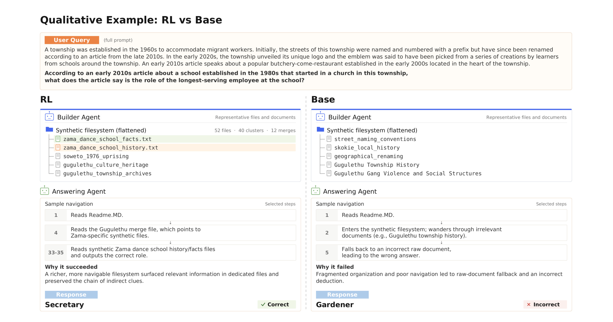
图 5 的问题由城镇、街道变化、学校起源等线索组成，最终要找长期任职员工的职位。RL 一侧的工作区有专门的学校事实与历史文件，回答者通过索引进入相关区域后得到秘书这一正确职位；基础构造者在城镇历史等泛化主题间游走，最后给出园丁。注意图中左侧成功路径也包含较多步骤，所以案例并不支持“成功意味着永远更短路径”。真正的差别是相关事实是否有专门落点、间接关系是否保留，以及回答者能否找到足够证据停止搜索。文件名中的语义与高层材料的组织可能共同作用，仅观察 RL 文件更多，无法判定究竟是哪种因素产生主要收益；后面的内容保持干预正是为了把结构作用与内容收益部分分开。这个案例也提醒复现者不要把可读目录本身当作质量检查终点，应继续检查相关来源和最终答案是否对应。因此复现时还应保留基础构造者的真实失败轨迹，检查它是漏建关键事实、生成错误摘要，还是回答者没有读到已有证据；这些失败对应不同的后续改进。
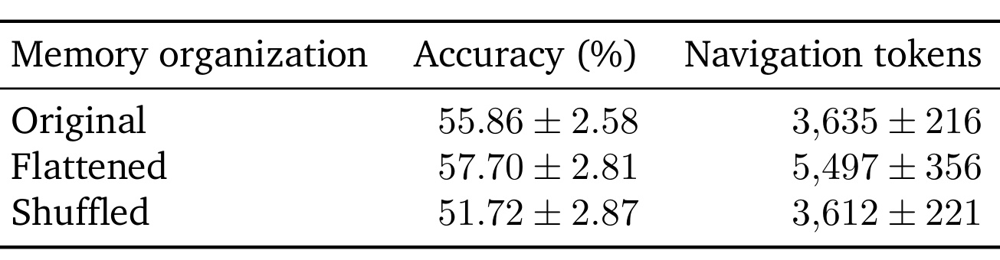
表 7 在四十九个已有完整快照的语料、四百三十五道扩展题上进行新的一轮匹配回答。原始组织准确率百分之五十五点八六、导航三千六百三十五 token；扁平化百分之五十七点七零、五千四百九十七 token；打乱语义位置百分之五十一点七二、三千六百一十二 token。扁平化没有显示准确率下降，却提高导航开销，支持层次结构主要帮助有效访问的解释；打乱后开销近似、准确率降低，说明语义放置可能有帮助，但误差范围要求克制解释。这些数字不能和主问题的百分之七十五或七十七直接作下降幅度比较，因为问题集合、完整快照筛选和回答运行均不同。因果判断也仍然局限于作者设计的两种结构干预。
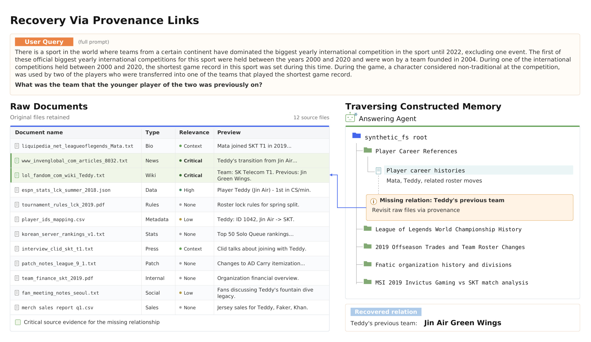
图 7 展示合成材料遗漏关键关系时的回退。问题需要从赛事和选手线索确定某位选手此前所在队伍，工作区已整理职业历史，却缺失了所需的前队关系。回答者通过来源链接定位原始文件，恢复 Teddy 原来属于 Jin Air Green Wings 的事实。左侧明确列出相关和无关的原始材料，右侧显示缺失关系如何触发重新读取，这让来源保留从一句原则变成可观察的机制。它也暴露一个边界：存在链接只能提供检查机会，不能保证模型每次都会正确意识到摘要不充分，亦不能保证原始材料本身没有冲突或过时。未来评测需要统计回退触发率、回退成功率与来源错误率；当前案例只能证明该行为能够出现，无法给出其稳定性水平。当回退成功时，合成层的作用是提供检索方向，原始材料负责补足最终事实。两层职责分开，也有助于辨认系统失败究竟来自摘要遗漏还是证据本身不足。
4. 总结
Librarian Agents 将语料级知识整理变成了可学习的代理行为。最有说服力的链条是：构造阶段隐藏未来题目，以固定回答者的实际成败奖励编辑；经过 RL 后，在匹配回答模型下准确率提升；再用多查询、迁移和结构干预检查这种改善是否只是单题缓存。它拓宽了外部记忆的设计空间，让目录、摘要和索引不必完全由人工规则决定，也给长期文档助手提供了比“增加检索次数”更上游的优化位置。但这些结论来自离线材料问答，生产系统的内容生命周期和服务预算仍需要另行验证。
可以迁移的启发是先识别一批能够稳定复用的材料，再决定是否值得构造语义工作区。例如研发助手可以围绕组件、版本和故障形成可追溯索引；推荐研究助手可以整理实验记录、特征定义和上线变化，让后续归因问题共用关系材料。这些是基于方法的工程推断，不是本论文已经验证的推荐收益。实施时应把原始证据视为不可变层，让合成材料记录来源与更新时间，并在目标问题分布上同时计算准确率、覆盖、导航 token 和更新代价，避免用文件规模当成果指标。
主要限制至少有以下四项。第一，实验以固定语料为主，没有证明高频增删的知识库能低成本维护，重建频率可能吞掉摊销优势。第二，主迁移集中三个领域且差异很大，数学域收益有限，不能据宏平均推导每类任务都改善。第三，准确率由固定参考答案与模型语义判分得到，裁判偏差、合成问题分布及题目难度都会影响泛化判断。第四，系统依赖内容执行器、历史压缩器和回答模型，小构造模型不等于小端到端预算，记录 token 也不等于真实时延或现金费用。此外，来源链接仍可能没有被正确使用，错误的合成关系可能误导后续导航；保留来源是必要条件，还不是事实可靠性的充分证明。
后续值得做三类实验：先在按时间划分的新增文档场景测试增量更新，比较局部重建、全量重建和直接检索；再固定回答阶段 token 上限，观察准确率收益在严格预算下是否仍存在，并分别记录工具延迟与不同模型费用；最后用人工抽检的证据链与真实查询替换一部分合成扩展题，分层统计长尾事实、冲突文档和需要回退的案例。若希望用于推荐知识助手，还应加入权限隔离、用户材料删除后的合成记忆清理和证据过期测试，这些都是应用方需要新增的验证。
这些跟进还应分别记录建设失败、回答失败与证据不足，避免只优化一个总体正确率后失去可诊断性。尤其对被多人反复使用的共享知识工作区，清楚展示来源、更新时间与已知遗漏，比生成一棵看起来完整的目录更有长期价值。
阅读本文时最应记住三个限定：百分之七十五与七十七来自不同冻结回答者；百分之五十二和六十六点八来自 BRIGHT 三域主比较；十问复用节省百分之三十三点八指每个期望正确答案的记录 token。只要保留这些分母和时间边界，这篇工作的价值就很清楚：模型可以学习留下更有用的知识环境，使后续回答依靠持续可访问的证据，而建设与使用的共同成本则必须由实际负载检验。